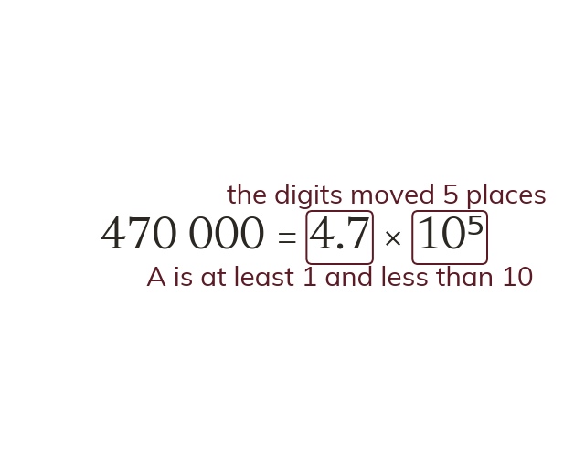

What standard form is
Standard form is with
n counts the places the digits shift. A larger n means a larger number.
Standard form writes a number as where is between and (but never reaching and n counts how many places the digits have shifted left from A larger n therefore always means a larger number.